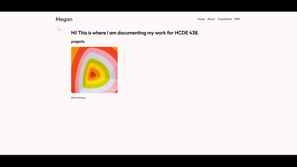

MP0 Writeup
Overview
- The first thing I did was change the background color and font. I found a font I liked from Google Fonts and implemented it quickly by including an import link at the top of the CSS file.
- I created the other pages by copying the current HTML file into separate folders - one for each page.
- I wanted to make a navigation bar to have a way to access my other pages. I found a nav bar I liked from CodePen. I took the code and modified it to suit my needs. I added the code for the nav bar to all my pages.
- I adjusted the styling a bit more. For example, I made the navbar wider than my body content.


Issue
When I tried to make the rotate animation, I was having trouble making it only rotate once. The example code I was looking at specified "infinite" animation which meant it would keep rotating. I tried changing the animation-iteration-count value to "1" but it was still not the effect I was going for. The text would rotate 360 degrees and then rotate back. I just wanted it to rotate 360 degrees and end there. The solution was to specify 0.5 times. I learned that the animation-iteration-count property could take decimals.
CSS Transition
I added a rotate animation to the "Megan" text in my nav bar. I chose this transition because it looks cool and provides more interaction and movement for the user to enjoy. I used the @keyframes rule to specify an animation in CSS. I applied the rotate function to achieve the desired effect.
Ideas and Future
I'd like to add an animation to the homepage. Something big and graphic that can really catch someone's attention. I will see if I can make it interactive so the user can have fun playing around on my site. Right now, my portfolio is still a bit plain. I would like to add a footer, adjust the font styles, and add some more color to the text or more images.